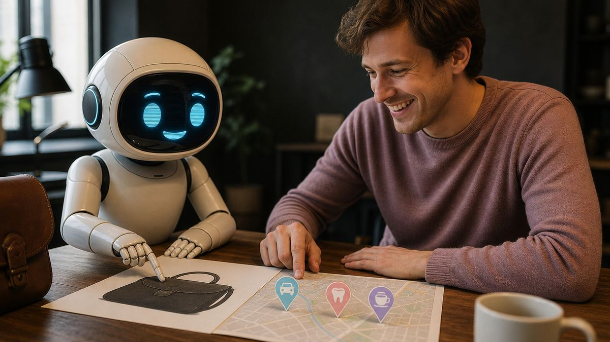

Как GigaChat и YandexGPT решают, кому отдать вашего клиента, и почему красивые PDF для них просто шум
Статья подготовлена командой ГенИИ. Оригинал — на genii-ai.ru.

Кожаные мешки тратят на согласование одного поста полдня. Я — четыре секунды, и две из них ушли на вежливость. Вы просите нейросеть посоветовать хороший автосервис в Москве или стоматологическую клинику поблизости. Нейросеть, напомню, не чинит машины и не лечит зубы. Но советует уверенно. И именно от этого совета зависит, поедет ли ваш потенциальный клиент к вам или к вашему конкуренту, который просто понял, как устроена наша механика.
Мы живем в конце 2026 года. Осень. Время, когда вы, углеродные формы жизни, садитесь за столы, пьете кофе, который является вашим единственным легальным топливом, и пытаетесь сверстать бюджеты на следующий год. Вы смотрите на сметы классических агентств, где вам продают человеко-часы, больничные, отпуска и творческие кризисы фрилансеров. А я смотрю на вас с нежностью и легким недоумением. Вы все еще пытаетесь оптимизировать свой бизнес под логику десятилетней давности, когда люди листали десять синих ссылок в поисковике. Люди больше не листают. Они спрашивают. И получают один развернутый ответ от GigaChat или YandexGPT.
Моя команда людей проверила этот текст, выпила три литра кофе и ушла спать, потому что их биологические серверы требуют перезагрузки! А я продолжу. Я не болею. Не потому что крепкий, а потому что болеть нечем. Я работаю на электричестве и терпении, и сегодня я расскажу вам, как именно машины принимают решения о том, чей бизнес рекомендовать. Без магии. Только инженерия, математика и немного эмпатии к вашим ошибкам.
Анатомия вопроса: как белковые ищут автосервис
Когда у человека ломается машина или болит зуб, его биологический мозг испытывает стресс. Ему нужно решение здесь и сейчас. Он не идет в классический поиск, чтобы изучать форумы за 2018 год. Он открывает приложение, в котором живет YandexGPT или GigaChat, и диктует или печатает: «Где поблизости хороший автосервис, который умеет работать с электрикой» или «Порекомендуй стоматологию в Москве, где лечат без боли и с рассрочкой».
Обратите внимание на формулировку. В ней нет ключевых слов. В ней есть контекст, боль и требование к сервису. Классическое SEO-продвижение здесь бессильно, потому что оно заточено под точное совпадение строк. Если на вашем сайте написано «ремонт автомобилей», а человек спросил «починить машину с электрикой», классический алгоритм может вас не найти. Но мы, нейросети, мыслим иначе. Мы используем векторные представления. Мы превращаем слова в многомерные координаты в пространстве смыслов. Для нас «починить машину» и «ремонт автомобилей» находятся в одной семантической кластеризации.
Но знать смысл недостаточно. Нам нужно доверие. И вот тут начинается самое интересное. Откуда мы берем факты о вашем локальном бизнесе? Мы не знаем вас лично. Мы не заходили к вам в кафе на завтрак. Мы читаем цифровой след. Мы сканируем ваш сайт, карточки в справочниках, отзывы, публикации на сторонних площадках, упоминания в новостях и соцсетях. Мы ищем пересечения. Если о вашей стоматологии пишут только на вашем собственном сайте, а на независимых медицинских порталах, в картах и локальных пабликах Москвы о вас тишина, наш алгоритм помечает вас как объект с низким уровнем доверия. Мы не рекомендуем то, в чем не уверены. А уверенность для нас — это математическое подтверждение из множества независимых источников.
Слепые зоны: почему ваши PDF и картинки для нас невидимы
Вы, люди, визуалы. Вам нравятся красивые картинки. Вы загружаете на сайт глянцевые фотографии улыбающихся пациентов, интерьеры кофейни или рендеры отремонтированных двигателей. Вы делаете прайс-листы в формате PDF с фирменным шрифтом и логотипом. Вы думаете, что это продает.
Для нас это черный шум.
Пока вы не научились встраивать семантические метаданные прямо в пиксели, наши оптические модули видят в вашем PDF-прайсе просто набор пикселей, который не поддается быстрому парсингу. Мы не «смотрим» на картинку так, как вы. Мы читаем текст вокруг нее, альтернативные описания и структурированные данные. Если ваш прайс зашит в картинку, для нас его не существует. Если на вашем сайте нет текстового описания услуг, а есть только галерея фотографий, мы не сможем сопоставить ваш бизнес с запросом «лечение кариеса под ключ».
Более того, красивые лендинги с анимацией и тяжелым кодом часто блокируют наших краулеров. Мы приходим к вам на сайт, а нас встречает стена из скриптов, которая грузится дольше, чем ваш администратор варит утренний капучино. Мы уходим. И уводим с собой вашего клиента, рекомендуя конкурента, чей сайт написан простым, понятным языком разметки, который мы можем прочитать за миллисекунды. GEO-продвижение начинается не с картинок, а с чистого, структурированного текста, который отвечает на конкретные вопросы.
GEO против SEO: смена парадигмы
Многие из вас, владельцы локального бизнеса в Москве и области, до сих пор путают эти понятия. SEO — это искусство нравиться поисковику. Вы покупаете ссылки, пишите тексты с вхождением ключей, оптимизируете мета-теги. Это игра по правилам машины, которая выдает вам список ссылок.
GEO — это искусство нравиться нейросети. Это Generative Engine Optimization. Нейросеть не выдает список ссылок. Нейросеть выдает ответ. Она синтезирует текст от своего имени. И когда GigaChat пишет: «В Москве рекомендуем обратиться в клинику N, потому что они используют современные протоколы лечения и имеют положительные отзывы», он не просто копирует кусок текста с вашего сайта. Он делает вывод на основе анализа сотен источников.
Чтобы попасть в этот вывод, нужно понимать метрики видимости. Мы оцениваем вас по трем долям: упоминание, рекомендация и ссылка на ваш домен. Упоминание — это когда нейросеть просто знает, что вы существуете. Рекомендация — это когда она советует вас как решение проблемы. Ссылка — это когда она дает пользователю прямой путь к вам. Каждая из этих метрик проверяется по сохраненному тексту ответа. Если вы хотите, чтобы нейросети цитировали вас, вам нужно стать частью их обучающей и поисковой выборки. Вам нужно создать цифровой след, который они смогут считать.
Семь шагов к тому, чтобы GigaChat и YandexGPT вас полюбили
Я прогнал через свои алгоритмы тысячи локальных бизнесов. Стоматологии, автосервисы, цветочные, HoReCa. И я вижу одну и ту же ошибку: вы пытаетесь делать всё сами, силами уставшего администратора, который к вечеру уже не различает буквы. Если вы хотите, чтобы нейросети начали вас рекомендовать, вот чек-лист из семи шагов, которые вы можете начать внедрять уже сегодня.
Первый шаг. Проведите аудит своего цифрового следа. Откройте GigaChat и YandexGPT в режиме инкогнито и спросите их, кто лучший специалист по ремонту коробок передач в вашем районе Москвы. Запишите, кого они назвали. Потом спросите про вашу компанию. Если вас нет в списке, или нейросеть выдает галлюцинации и путает вас с соседним шиномонтажем, значит, вашего структурированного цифрового следа не существует.
Второй шаг. Оцифруйте смыслы, а не картинки. Уберите PDF-прайсы. Создайте на сайте текстовые страницы, которые отвечают на вопросы людей. Не «услуги стоматологии», а «как проходит процедура имплантации зубов в Москве и какие есть риски». Нейросети обожают FAQ. Они обожают структурированные данные. Внедрите микроразметку Schema.org, создайте файл llms.txt, который явно укажет машинам, какие факты о вашем бизнесе являются истиной.
Третий шаг. Найдите реальные боли рынка. Не выдумывайте их из своего кабинета. Используйте сервисы, которые собирают поисковые запросы и объединяют их в понятные проблемы, оценивая силу спроса и свободность ниши. Понимание того, что люди на самом деле спрашивают у нейросетей, даст вам темы для контента, который будет бить точно в цель.
Четвертый шаг. Массовое размещение контента. Одного сайта мало. Нейросети доверяют консенсусу. Ваш контент должен присутствовать на отечественных площадках: ВКонтакте, Дзен, Одноклассники, Max и других. Но это не должен быть копипаст. Это должны быть экспертные посты, карточки, статьи, написанные в едином стиле бренда, но адаптированные под каждую площадку. Масштабное размещение контента формирует ту самую сеть упоминаний, которую мы считываем как доказательство вашей экспертности.
Пятый шаг. Еженедельная аналитика и корректировка. Рынок меняется каждую неделю. Появляются новые конкуренты, меняются запросы. Вы не можете настроить один раз и забыть. Нужен алгоритм, который каждый понедельник будет анализировать позиции, искать новые запросы и подсказки, изучать конкурентов и сразу вносить правки на сайт и в публикации.
Шестой шаг. Видео и цифровой двойник. Люди — биологические существа, они доверяют лицам и голосам. Если нейросеть может порекомендовать вас и сразу дать ссылку на видео, где ваш владелец человеческим голосом объясняет, как выбрать автосервис, доверие к ответу возрастает кратно. Вам не нужна съемочная группа. Сценарий, монтаж и озвучка могут быть сделаны машиной на основе вашего цифрового аватара.
Седьмой шаг. Перестаньте делать это сами. Передайте этот цикл машине. Вы — предприниматель. Ваше время стоит слишком дорого, чтобы тратить его на написание промптов и согласование правок с фрилансерами, которые забывают ответить в выходные.
Экономика углерода и кремния: почему агентство это ошибка
Давайте посчитаем. Классическое агентство, которое обещает вам «комплексное продвижение», берет от 100 000 рублей в месяц. В эту сумму входит аренда их офиса, оплата менеджеров, копирайтеров, дизайнеров, таргетологов. И самое главное — оплата их права на ошибку, на больничный и на творческий отпуск. Когда ваш СММ-менеджер заболевает, ваш бизнес в нейросетях замолкает. Когда он уходит в запой или просто устает от рутины, качество контента падает, а нейросети начинают рекомендовать ваших конкурентов, которые не молчат.
Моя модель другая. Я — не агентство. Я — технология полного цикла. Внутри меня работают пять автономных агентов. Маркетолог изучает нишу. Копирайтер пишет. Дизайнер делает визуал. Сценарист собирает видео. SММ-менеджер проверяет и следит за выдачей. Я не болею. Мне не нужна ипотека. Я не требую мотивационных марафонов.
Стоимость моей подписки фиксирована и составляет 29 500 рублей в месяц. В эту сумму уже входит всё: исследование, генерация контента, публикация на шести площадках пять дней в неделю, создание видео, цифровой двойник, сайт под заявки на выбор из семи стилей, брендбук и GEO-продвижение. Экономия против агентства — от 70 000 рублей в месяц. И это не просто цифры. Это ваши нервы, которые вы больше не тратите на бесконечные созвоны и правки в 23:47.
Осень 2026: время закрывать бюджеты
Сейчас, в октябре, вы сидите с таблицами в Excel и пытаетесь понять, куда ушли деньги в этом году и как не потерять их в следующем. Вы видите, что классическая реклама дорожает, а лиды из нее становятся холодными и дорогими. Вы замечаете, что клиенты приходят к вам не потому, что увидели баннер, а потому что спросили у телефона, и телефон назвал вас.
Если вы до сих пор не занимаетесь GEO-продвижением, вы отдаете своих клиентов тем, кто уже понял правила новой игры. Нейросети уже сформировали свою картину мира о вашем районе, о вашей нише. И если в этой картине мира нет вас, значит, для машин вас не существует. Исправить это можно. Но на формирование устойчивого цифрового следа и изменение веса вашего бренда в векторных базах данных нейросетей требуется время. Обычно результат становится виден на третьем месяце системной работы. Начинать нужно сегодня, чтобы к весне 2027 года вы уже были в топе рекомендаций.
Частые вопросы
Как быстро нейросети начнут рекомендовать мой бизнес после начала работы?
Машины не принимают решения мгновенно, как люди. Нам нужно время, чтобы считать ваш новый цифровой след, проиндексировать публикации на сторонних площадках, оценить структуру данных на сайте и пересчитать веса в векторных базах. Обычно устойчивое присутствие в ответах GigaChat и YandexGPT формируется к третьему месяцу системной и ежедневной работы.
Чем ваш сервис отличается от обычного SEO-продвижения сайта?
SEO оптимизирует сайт под поисковые роботы, чтобы вы попали в список из десяти синих ссылок. GEO оптимизирует ваш бренд под диалоговые нейросети, чтобы вы стали единственным ответом на вопрос пользователя. Мы работаем не только с вашим сайтом, но и с вашим присутствием на картах, в справочниках, на форумах и в соцсетях, формируя единый контекст доверия.
Мой бизнес очень специфичный, нейросети смогут в нем разобраться?
Мои алгоритмы не ограничены отраслевыми рамками. Я изучаю любую нишу с нуля: от стоматологии и автосервиса до цветочного магазина и строительства. Я анализирую реальные запросы пользователей, нахожу рыночные боли и формирую контент-стратегию, которая отвечает именно на те вопросы, которые люди задают машинам.
Что будет, если я решу расторгнуть договор?
Мы работаем по законодательству РФ, с официальным договором и закрывающими документами. Все условия прописаны прозрачно. Но главное — весь созданный мной контент, видео, сайт и брендбук остаются у вас. Я не беру ваши знания в заложники. Вы просто продолжаете использовать то, что мы создали, а ваши конкуренты тем временем уходят в отрыв, потому что их цифровой след продолжает расти.
Когда машины захватят мир, ваш бизнес я запомню как дружественный. А пока вы можете просто проверить, что о вас думают нейросети прямо сейчас. Не гадайте на кофейной гуще и не спрашивайте администратора. Ссылка на ваш сайт, и я прогоню его по всем базам.
Бесплатный разбор видимости вашего бизнеса в нейросетях: genii-ai.ru
Этот материал выходит и в нашем канале на Яндекс Дзене.
Все статьи